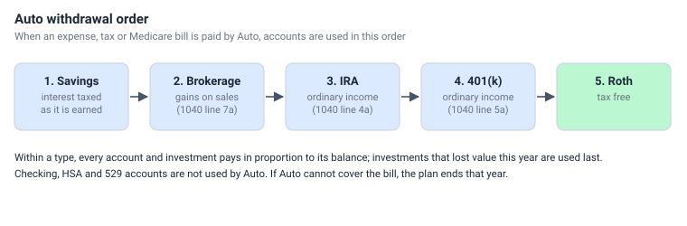

Withdrawals and Auto
When a bill has to be paid - a living expense, the year's income tax, Medicare - the money comes out of your accounts. Choosing which account to draw from changes your taxes, so the planner follows a set order called Auto.
The Auto withdrawal order

Auto uses account types in this order, moving to the next type only when the previous ones are empty:
- Savings - already-taxed money; taking it costs no tax.
- Brokerage - only the gain on what is sold is taxed, at capital gain rates.
- IRA - every dollar is ordinary income.
- 401(k) - every dollar is ordinary income.
- Roth - tax free, and the longest-growing money, so it is used last.
Within a type, all accounts and investments pay in proportion to their balances. Investments that lost value this year are used last, so you don't sell what is down if something else can pay. Checking, HSA and 529 accounts are never used by Auto.
Paying from a specific account
An expense can name an account in its From column instead of Auto - for example a 529 account for tuition, or an HSA for medical bills. That account pays first; if it runs short, Auto pays the rest. Taxes and Medicare are always paid by Auto.
Withdrawals can create tax
- Selling from a taxable account realizes a capital gain or loss: proceeds minus the average cost basis of what was sold.
- Taking money from an IRA or 401(k) is ordinary income (lines 4a / 5a).
- Each year's tax is paid the next year, the way a return filed in April is paid. A withdrawal that pays last year's tax is income of the year it is made, so it goes on that year's return and its tax is paid the year after. There is no back-and-forth recalculation.
The cash account
Social Security and RMDs need somewhere to land. The planner uses the first Savings account that holds an investment; if there is none, the first Checking, then the first Brokerage. The plan cannot run without one of them. Money in the cash account is then available to Auto like any other savings.
When the money runs out
If Auto cannot pay a bill because every account it may use is empty, the plan ends in that year. Run Plan reports the year the money ran out, and the optimizer records it as the scenario's end-of-plan year. Money in Checking, HSA or 529 accounts is not used to rescue the plan - name those accounts on an expense if you intend to spend them.